15 september 2022
•Download file database wordpress terlebih dahulu. Lalu extract file ke dalam folder htdocs yang ada di folder xampp sambil mengakifkan xampp (bagian apache dan msql)
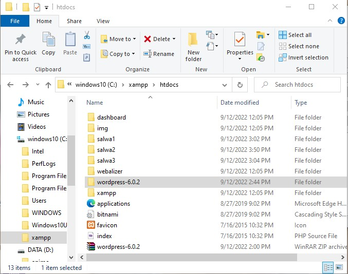 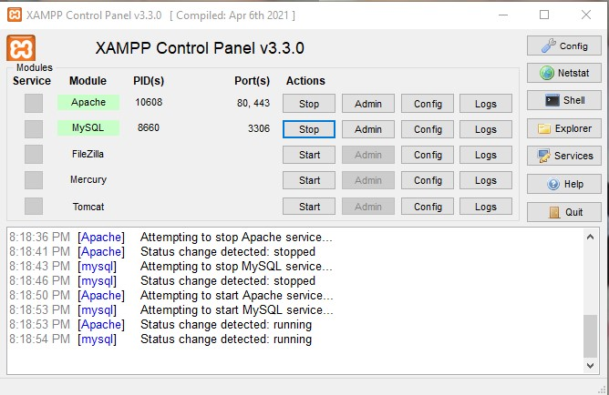 • Lakukan instalasi dengan mengakases wordpress melalui browser. Pada browser, masukkan URL berikut: http://localhost/wordpress-6.0.2 Hasil dari tampilan ini adalah sebagai berikut 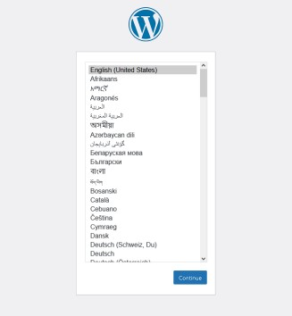 • Klik continue, Lalu klik tombol lets go dibawah
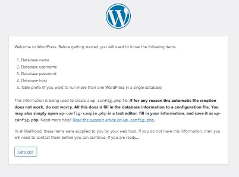

•Kembali ke tab instalasi wordpress, klik Try Again lalu isikan kembali konfigurasi database seperti tahap sebelumnya, klik Submit.
•Jika konfigurasi tidak ada masalah, langsung saa klik run the installation
•Lengkapi form informasi yang dibutuhkan lalu klik Install Wordpress
•Isikan password dan pastikan kita mengingatnya.
•Untuk melihat dan mengedit web yang telah dibuat, akses menggunakan link berikut: http://localhost/wordpress-6.0.2
•akan muncul seperti gambar dibawah
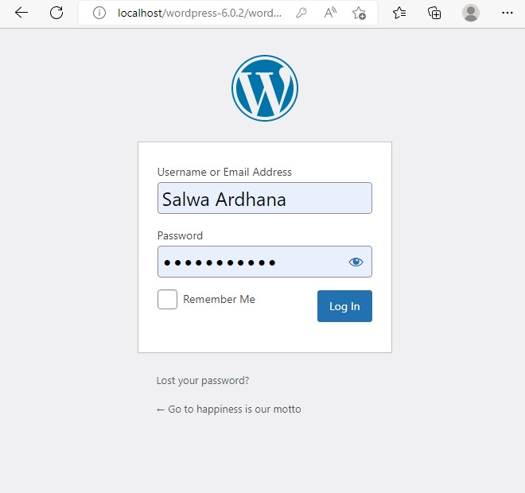 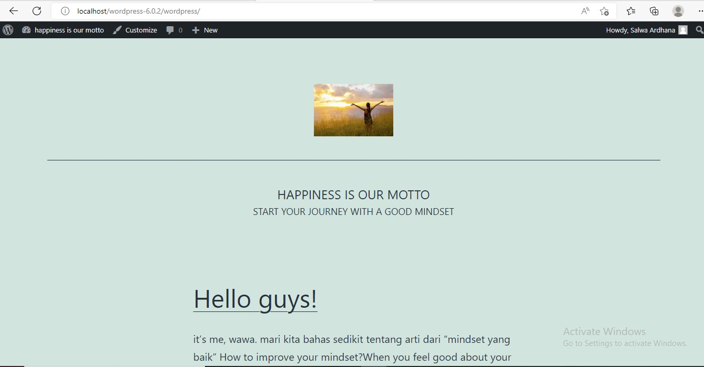 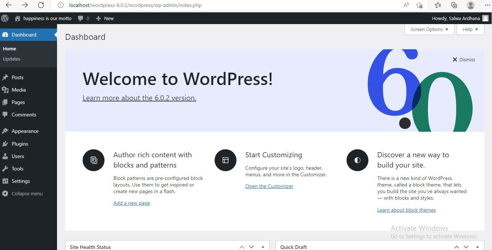 TUGAS 2. Membuat website wordpress dengan database terpisah ( 3 website)• pertama, siapkan database dan web server di Ubuntu.
• Atur network setting menadi bridge dan host only
• Buka database, ketik sudo nano /etc/mysql/mysql.conf.d/mysqld.cnf
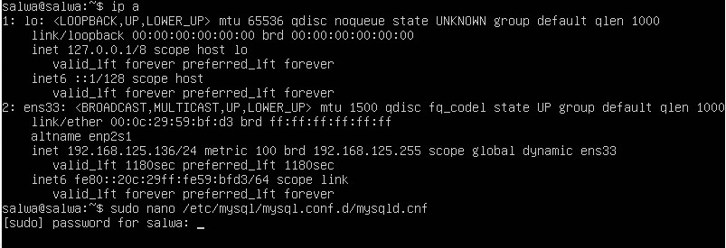Masukkan password untuk user salwa. Ganti bin address menjadi IP Server Database
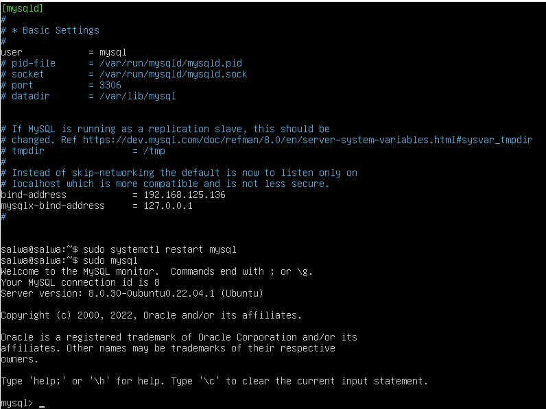• Restart mysql dengan perintah sudo systemctl restart mysql
• Membuat user agar Database MySQL dapat diakses melalui WEB Server. Jalankan perintah sudo mysql
• Membuat user dengan menalankan perintah CREATE USER '{username}'@'{ip web server}' IDENTIFIED BY '{password}';
• GRANT ALL PRIVILEGES ON *.* TO '{username}'@'{ip web server}';
• FLUSH PRIVILEGES;
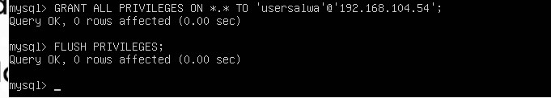KONFIGURASI WEB SERVER
Jalankan perintah di web server
• lakukan penginstalan mysql-client dengan menjalankan perintah sudo apt install mysql-client
• Login ke mysql DBserver melaluiWebServer dengan perintah mysql –u usersalwa –h (ip) -p
• Jalankan perintah mysql> \s untuk cek informasi database
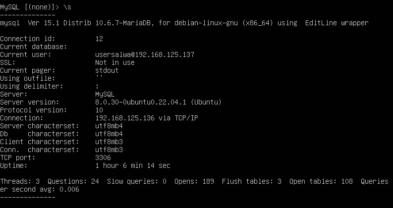• Pengujian apache web, untuk mengecek apakah php dan apache sudah terinstal atau belum, gunakan perintah php --version
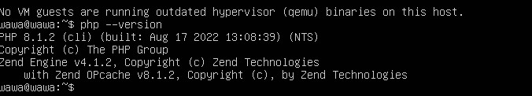• Membuat file konksi pada webserver dengan perintah sudo nano/var/www/html/koneksidb.php
INSTALL WORDPRESS DI UBUNTU
• apt update && apt upgrade

• install apache2 menggunakan perintah apt install apache2
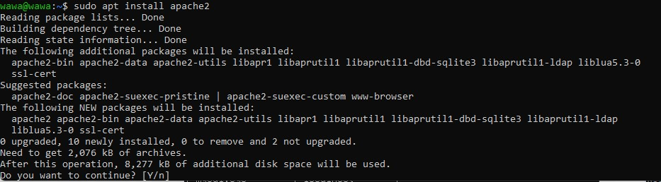• selanjutnya, jalankan perintah systemctl status apache2
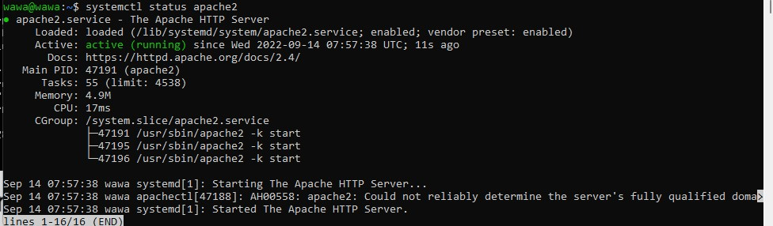• install mysql . apt install mariadb-server mariadb-client . mysql_secure_installation
• install php . jalankan perintah sudo apt install php php-mysql
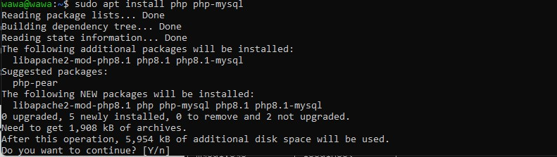• created a info.php file at /var/www/html/path
append the following lines
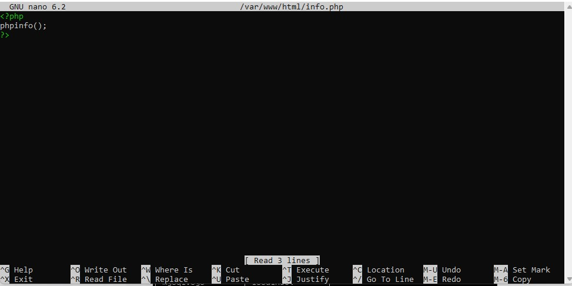•create wordpress database mysql –u root –p
•CREATE DATABASE wordpress_db;
•CREATE USER 'wp_user'@'localhost' IDENTIFIED BY 'password';
•GRANT ALL ON wordpress_db.* TO 'wp_user'@'localhost' IDENTIFIED BY 'password';
• FLUSH PRIVILEGES; Exit;
INSTALL WORDPRESS CMS
•cd /tmp && wget https://wordpress.org/latest.tar.gz
•tar -xvf latest.tar.gz
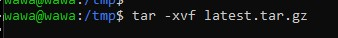•kemudian alankan perintah seperti gambar dibawah
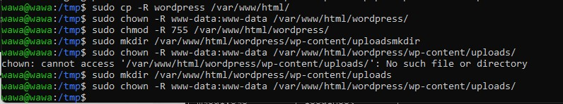• step terakhir, buka wordpress menggunakan alamat ip
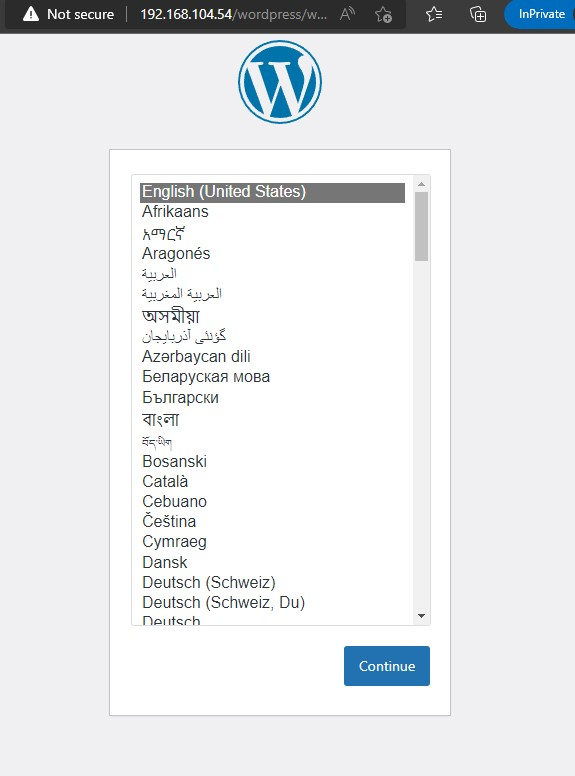 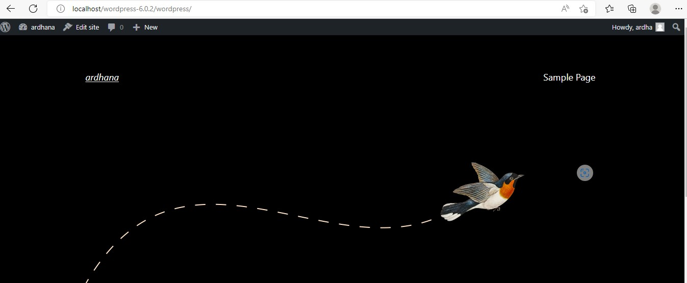 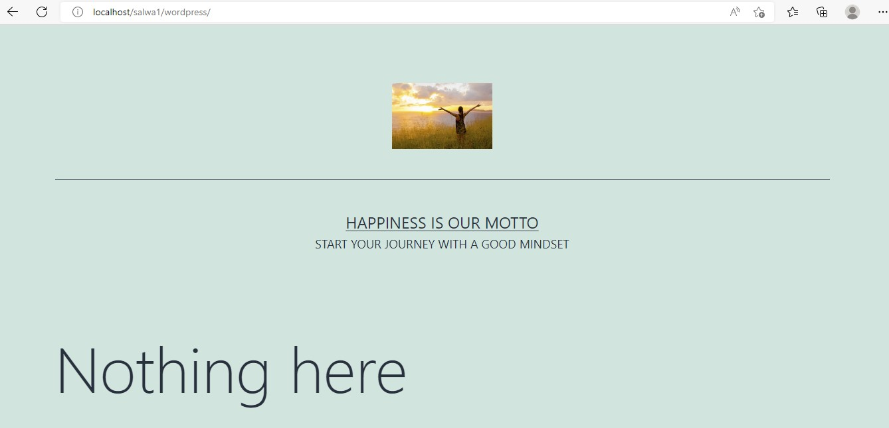 Tugas 3. Jelaskan kegunaan antara union, select, wait dan -- .•MySQL UNION adalah Operator MySQL yang digunakan untuk menggabungkan kumpulan hasil dari 2 atau lebih pernyataan SELECT. Ini menghapus duplikat baris antara berbagai pernyataan SELECT. Setiap pernyataan SELECT di dalam operator UNION harus memiliki jumlah field yang sama pada set hasil dengan tipe data yang sama.
•Perintah SELECT merupakan perintah dasar SQL yang di gunakan untuk memilih data dari database.